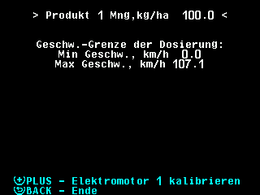
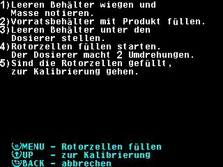
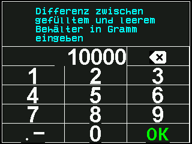

Einen Dosiermotor nach Masse kalibrieren
Sagen Sie dem Panel, wie viel Produkt ein motorgetriebener Dosierer je Wellenumdrehung liefert — was Sie brauchen, die Schritte auf dem Bildschirm und was die Fehlermeldungen bedeuten.
Die Kalibrierung sagt dem Panel, wie viel Produkt der Dosierer je Umdrehung seiner Welle liefert. Ohne sie kann das Panel die Menge in kg/ha nicht in eine Wellendrehzahl umrechnen. Kalibrieren Sie jeden Dosierer einzeln und erneut, sobald sich das Produkt oder die Saatgutpartie ändert. Sie gilt für Motoren in den Modi „Durchfluss“ und „Hybrid“.
Sie brauchen: eine Waage, einen Behälter zum Daruntersetzen unter den Dosierer und das Produkt im Saatgutbehälter.
Halten Sie die Maschine an. Bei Fahrt ist der Punkt Kalibrierung verborgen.
Öffnen Sie das Kontextmenü des Motors — auf dem Bildschirm Motoren oder über sein Produkt auf dem Bildschirm Sollmengen. Wählen Sie „Dosierer-Kalibr.(Masse)“ (vom Bildschirm Sollmengen aus: „Kalibrierung, Produkt“) und drücken Sie „MENU“.
Der erste Bildschirm zeigt die Sollmengen der verwendeten Produkte — das Produkt dieses Motors zwischen Pfeilen — und unter „Geschw.-Grenze der Dosierung:“ die niedrigste und die höchste Fahrgeschwindigkeit, bei der sich die Mengen ausbringen lassen. Drücken Sie „PLUS“.

Der erste Kalibrierbildschirm mit den Geschwindigkeitsgrenzen. Der Bildschirm listet auf, was vor dem Kalibrieren zu tun ist: den leeren Behälter wiegen und die Masse notieren, den Saatgutbehälter füllen, den Behälter unter den Dosierer setzen, die Rotorzellen füllen. Drücken Sie „MENU“, um die Rotorzellen zu füllen.

Die Liste der Handlungen vor der Kalibrierung. Der Motor dreht die Welle, und der Zähler „Umdrehung.“ läuft. Nach zwei Umdrehungen hält das Panel den Motor an und kehrt zurück. „BACK“ hält ihn früher an.
Drücken Sie „UP“. Der Bildschirm listet die Schritte der eigentlichen Kalibrierung auf: den Behälter leeren, ihn unter den Dosierer setzen, kalibrieren, den Motor anhalten, wiegen. Leeren Sie den Behälter und setzen Sie ihn zurück.
Drücken Sie „MENU“. Der Motor läuft, und der Dosierer füllt den Behälter. Fangen Sie so viel wie möglich auf — mindestens 1 kg, höchstens 60 kg.
Drücken Sie „BACK“, um den Motor anzuhalten.
Nach mehr als einer Wellenumdrehung bietet die unterste Zeile „MINUS“ an, um die Kalibrierung abzuschließen. Drücken Sie „MINUS“.

Der Kalibrierbildschirm mit der Zeile zum Abschließen. Wiegen Sie den vollen Behälter. Geben Sie am Ziffernblock die Differenz zwischen voll und leer in Gramm ein und drücken Sie „MENU“. Das Panel speichert „Masse, g“ und „Umdrehung.“ und kehrt zum ersten Bildschirm zurück.

Der Ziffernblock fragt nach der Masse in Gramm. Drücken Sie „BACK“, um zu verlassen.
Um die Kalibrierung statt in Schritt 9 zu verwerfen, drücken Sie „BACK“: Das Panel fragt „Sind Sie sicher?“ und verwirft bei „PLUS“; „MINUS“ kehrt zur Kalibrierung zurück.
Das Kontextmenü zeigt danach nicht Ihre Gramm, sondern ein gleichwertiges Zahlenpaar; nur ihr Verhältnis zählt. Es wird von selbst gespeichert.
Meldungen während der Kalibrierung
| Meldung | Bedeutung und was zu tun ist |
|---|---|
| „ALARM“ mit einem Grund, z. B. „Keine Verbindung“ oder „Keine Daten vom Drehsensor“ | Die Verbindung ging verloren, der Motor meldete einen Alarm, oder es kamen zehn Sekunden lang keine Wellenumdrehungen an. Der Motor wird angehalten, nichts wird gespeichert. „BACK“ führt zum ersten Bildschirm zurück; beginnen Sie von vorn. |
| „Alle E-Motoren nicht überwacht.“ | Kein Motor ist überwacht. Nehmen Sie den Motor auf dem Bildschirm Motoren mit „PLUS“ in die Überwachung. |
| Der Motorname in Rot mit „Nicht überwacht“, „Keine Verbindung“ oder „ALARM“ | Die Kalibrierung kann erst beginnen, wenn dieser Zustand behoben ist. |
| „Dosierung unmöglich!“, Grenzen in Rot | Die Mengen widersprechen einander: Keine Geschwindigkeit erfüllt alle. Ändern Sie eine Menge oder die Grenzen der Wellendrehzahl — jede Zeile nennt das Produkt, das sie vorgibt. |
| „Kalibrierung am Bedienteil“ | Am Motorcontroller ist ein Taster eingerichtet: Der Motor läuft nur, solange der Taster gehalten wird. |
| Die Geschwindigkeit muss null sein (in jeder Sprache auf Englisch) | Die Maschine fährt. Halten Sie sie an. |

Ihre Maschine tut etwas, das diese Seite nicht beantwortet? Schreiben Sie an support@agriwelt.com — es antwortet ein Ingenieur.